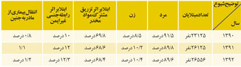

|
|
هشدار نسبت به افزايش زنان معتاد متاهل
پنج شنبه21 آذر 1392

اعتماد: آمارهاي ايدز و اعتياد زنان بهتدريج به سويي ميرود كه گوي سبقت را از مردان بربايد. در حالي كه تا چند سال قبل نگراني فعالان و كارشناسان مبارزه با اعتياد و آسيبهاي ناشي از آن صرفا بر جمعيت مردان متمركز بود زيرا آمار مردان معتاد و مبتلا به ايدز در آن حد نگرانكننده بود كه خدماتدهي، روي خود را به سوي اين جمعيت معطوف كند اما ظرف چند سال گذشته، رقمها دستخوش تغييراتي شده كه مسوولان نميتوانند بيتفاوت از كنار آن بگذرند. رشد شتابزده اعتياد و ابتلاي به ايدز در زنان كشور ظرف چند سال اخير اگرچه در دولت دهم به دليل مشغلههاي سياسي و غيراجتماعي دولت چندان جدي گرفته نشد اما دومين نشست كميته زنان و خانوادههاي آسيبپذير ستاد مبارزه با مواد مخدر به بررسي اين معضل اختصاص داشت. شهيندخت مولاوردي؛ معاون رييسجمهوري در امور زنان، در اين نشست آمار اخير سازمان ثبت اسناد درباره علل طلاق را يادآوري كرد كه بر مبناي اين آمار، يكي از دلايل رشد 7 درصدي طلاق طي شش ماه سال 92، اعتياد همسران بوده است.
اگرچه اعتياد مردان همواره يك چالش و عامل آسيب زا براي خانواده ايراني به شمار آمده در حدي كه قانونگذار براي جلوگيري از شيوع اعتياد در ميان ساير اعضاي خانواده، در اين مورد حق طلاق را در اختيار زن قرار ميدهد اما امروز روي ديگر سكه، افزايش تعداد زنان معتاد متاهل است. معضلي كه روز گذشته هم از سوي معاون رييسجمهوري مورد هشدار قرار گرفت و به گفته مولاوردي، نتايج تحقيقات رسمي نشان داده كه در حال حاضر حدود 62 درصد از زنان معتاد، متاهل هستند و 10 درصد علل آغاز اعتياد در زنان ناشي از اختلافات خانوادگي است. زناني كه ميتوانند مادر باشند و البته به آساني، بر اثر مصرف مواد مخدر يا محرك مرتكب رفتارهاي جنسي پرخطر شده و به همسر يا شركاي جنسي خود هم انواع بيماريهاي آميزشي و عفوني و از جمله ايدز را منتقل كنند. اين خطر اكنون در حدي موجب نگراني شده كه متوليان سلامت بهشدت از بابت انتقال ايدز از مادر به كودك ابراز نگراني ميكنند. آمارهاي ادواري وضعيت ايدز در كشور هم تاييد ميكند كه با وجود نازل بودن تعداد مادران مبتلا به ايدز كه بيماري را به جنين منتقل كردهاند اما زنان معتاد كه ممكن است بر رفتارهاي خود كنترلي نداشته باشند يا اولويت مراقبتهاي بهداشتي را چندان مورد توجه قرار ندهند و زاد و جنين خود را هم با بيتوجهي به پيگيري مراجعات به پزشك و مصرف داروهاي پيشگيرانه به خطر خواهند انداخت. از سويي، تعداد زنان معتاد كه البته واقعيتهاي آشكاري هم بوده، حالا چنان موجب برهم خوردن آرامش نهادهاي دولتي شده كه قدمهاي جديدي براي مقابله با اعتياد زنان برداشتهاند چنانكه مولاوردي از تشكيل كارگروهي در وزارت تعاون، كار و رفاه اجتماعي با حضور كارشناسان معاونت امور زنان رياستجمهوري، سازمان بهزيستي و سازمانهاي غيردولتي فعال خبر داد و گفت: «هدف اصلي اين كارگروه بايد حمايت از زنان معتاد بهمنظور دستيابي آنان به بهبودي بوده و حمايتها نيز بهگونهيي باشد كه فرد پس از بهبودي، ديگر به سمت اعتياد نرود و بتواند كسب و كار و مسكن مناسبي پيدا كند.»
هشدار اعضاي كميته زنان و خانوادههاي آسيبپذير ستاد مبارزه با مواد مخدر نسبت به افزايش زنان معتاد در حالي بود كه روز گذشته مينو محرز؛ رييس مركز تحقيقات ايدز كشور هم هشدار داد كه در پي ورود موج تركيبي جديد ايدز از راه روابط جنسي محافظت نشده و تزريق مشترك مواد مخدر موج آتي بيماري ايدز در ايران، باز هم معتادان را هدف قرار خواهد داد. هماكنون جرم دوسوم زندانيان كشور مرتبط با مواد مخدر است و 4 درصد از 1200 عنوان مجرمانه كشور درباره جرايم مواد مخدر است. در حالي كه حالا تعداد زنان معتاد، 3/9 درصد از جمعيت معتادان كشور را در ميگيرد حتي اگر همين جمعيت 123 هزار و 225 نفري زنان معتاد كشور هم توسط نهادهاي دولتي و غيردولتي بهطور كامل از خدمات حمايتي و درماني برخوردار شوند ميتوان به آيندهيي روشن براي اين زنان و فرزندان آنها اميدوار بود. اشكال كار اينجاست كه حتي براي نيمي از اين جمعيت هم امكانات درماني و حمايتي كافي وجود ندارد علاوه بر آنكه ماهيت اعتياد در اين زنان از الگوي يكساني پيروي نميكند. ليلا ارشد؛ مددكار اجتماعي در گفتوگو با «اعتماد» به همين تفاوت اشاره ميكند و ميگويد: «آنچه من ميبينم و البته مطابق آمارها، سن اعتياد در زنان پايين آمده و البته اعتياد هم در زنان گسترش يافته و ديگر هيچ طبقه اجتماعي و اقتصادي از اعتياد مصون نيست. امروز مصرف حشيش و شيشه بين زنان جوان بسيار رواج يافته و اشكال كار اينجاست كه اطلاعرساني و آگاهسازي زنان نسبت به عوارض مصرف اين مواد بسيار ضعيف است علاوه بر آنكه تفاوتهاي سوءمصرف هم بايد مد نظر باشد. در حالي كه زنان طبقه متوسط و تحصيلكرده جامعه براي بيدار ماندن در شب امتحان و تامين تمركز حواس و برخورداري از حال خوش در ميهمانيها يا حتي براي كاهش وزن رو به شيشه و حشيش ميآورند، در طبقات پايين و محروم جامعه شاهد هستيم كه زنان به دليل محروميت از مكانيزمها و ابزارهاي مقابله با آسيبهاي اجتماعي گرفتار اعتياد ميشوند. در حالي كه شاخصهايي مثل بيكاري و بيپولي و مشكلات اقتصادي، اين خانوادهها را هم متاثر كرده، در طبقات محروم جامعه، همسر يا ساير اعضاي خانواده، زن را معتاد ميكنند تا علاوه بر آنكه از ايرادگيريهاي زن كاسته ميشود، در مصرف مواد با عضو معتاد خانواده همراه شود و البته طبيعي است كه در اين عرصه، زنان با روي آوردن به تكديگري يا رفتارهايي كه در شان يك زن نيست ناچار به تامين هزينه اعتياد خود خواهند شد. متاسفانه در چرخه اعتياد، زنان همواره مورد سوءاستفاده قرار ميگيرند چنانكه شاهد هستيم معمولا مردان فروشنده مواد مخدر هستند اما خردهفروشي مواد توسط همسرانشان صورت ميگيرد.»عبدالرضا رحماني فضلي؛ دبيركل ستاد مبارزه با مواد مخدر هم روز گذشته در نشست كميته زنان و خانوادههاي آسيبپذير ستاد مبارزه با مواد مخدر نسبت به همهگير شدن معضل اعتياد در خانواده ايراني هشدار داد و گفت: «پديده شوم مواد مخدر در كمين همه خانوادههاست و هيچكس از هر طبقه و گروه اجتماعي، نميتواند تصور كند كه از اين تهديد مبراست، لذا با اين نگاه، حضور اعضا در اين كميته و كمك به خانوادهها بايد ابتدا از منظر انساني و سپس سازماني باشد تا به نتيجه مطلوب در اين حوزه برسيم. شناسايي و برقراري ارتباط با يك ميليون و 325 هزار خانوادهيي كه معتاد دارند كار سختي نيست و بايد روشهاي ارتباطي با اين خانوادهها شناسايي و سپس آنها را در امور پيشگيري، درمان و بهبودي ترغيب كرد.»